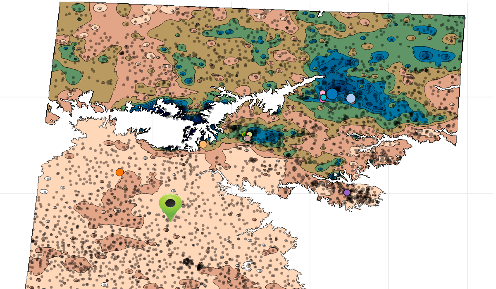
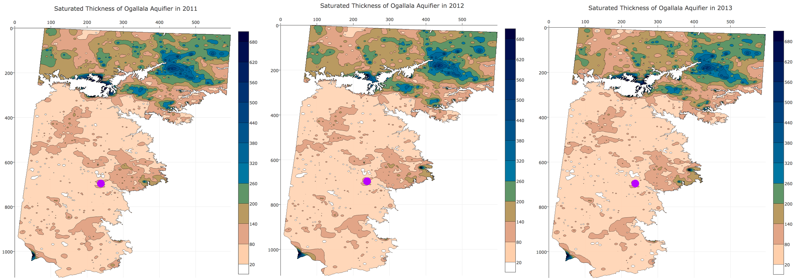
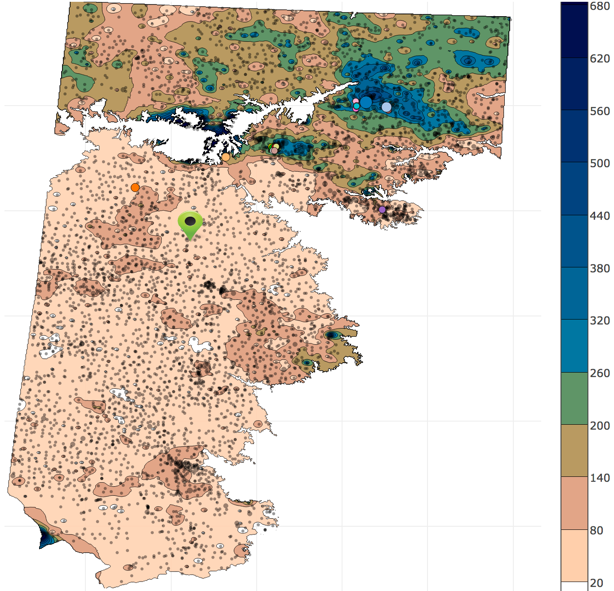
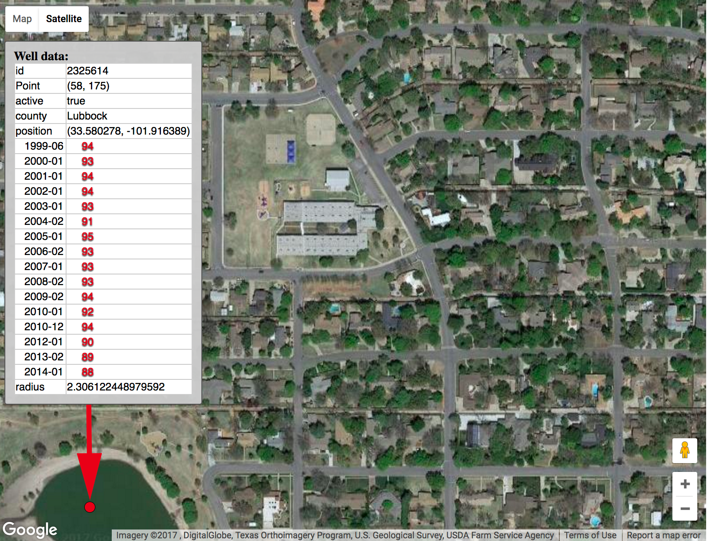
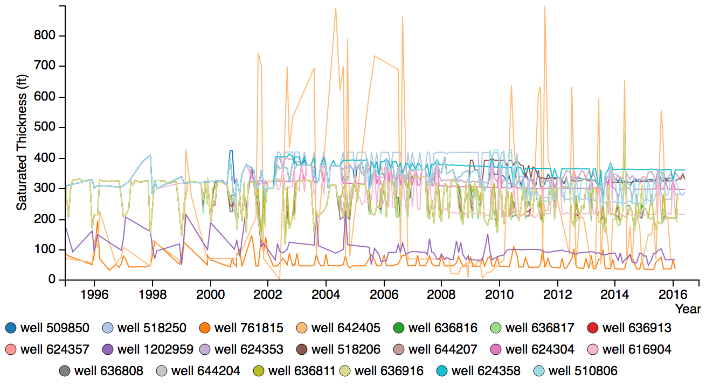
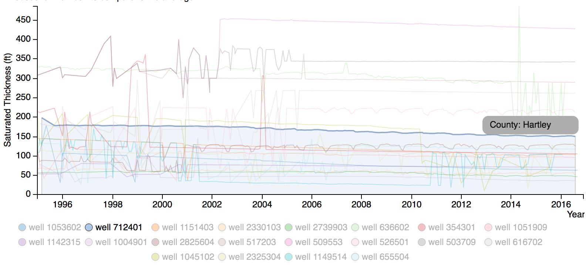
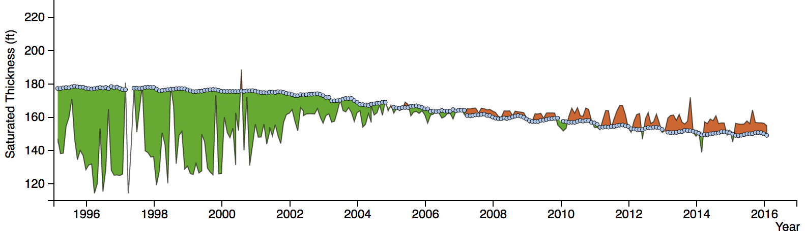
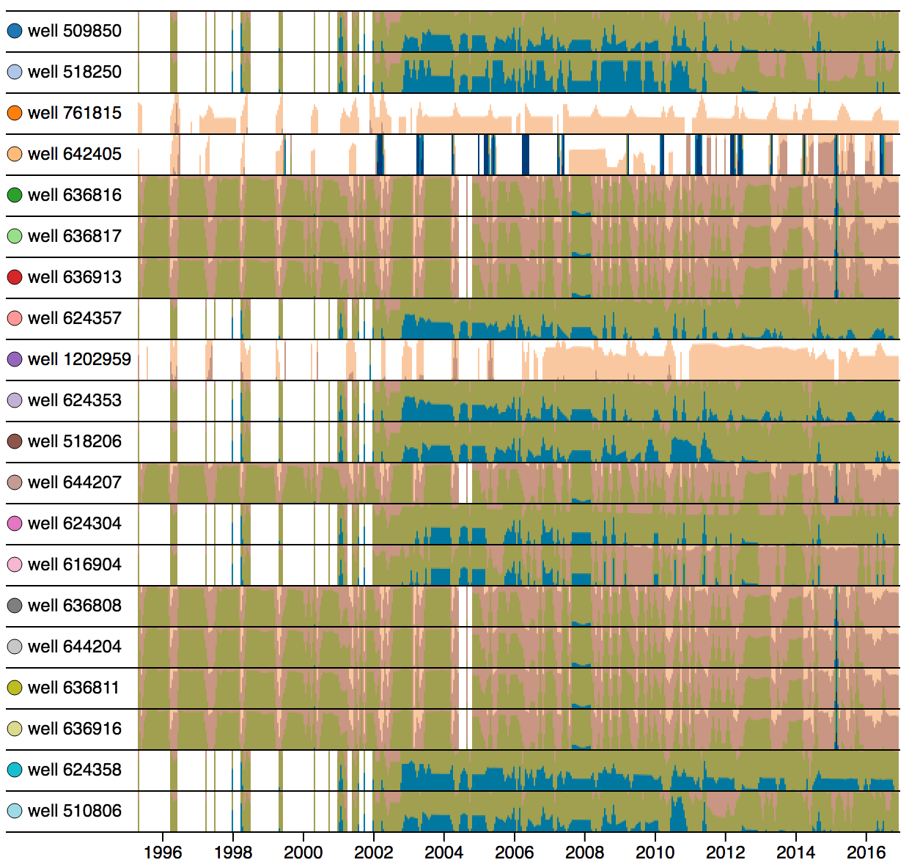

STOAViz: Visualizing Saturated Thickness of Ogallala Aquifer
| Tommy Dang, Long Hoang Nguyen, Abdullah Karim, and Venki Uddameri Computer Science and Civil, Environmental, and Construction Department, Texas Tech University, Texas, USA |

https://en.wikipedia.org/wiki/Ogallala_Aquifer



- T1: Provide an overview of large number of well data.
- T2: Retrieve and display well details on demand
- T3: Group wells based on their geolocations
- T4: Filter and sort wells by their time series features
- T5: Detect suspicious or abnormal wells


 

- One post-doc researcher.
- One as-sociate professor
Both have at least nine years of experience in this research domain.
They indicated that they are familiar with the line graphs but not the horizon graph.
- One expert indicated that with horizon graphs, she can quickly compare patterns of a large number of wells. It makes sense that neighboring wells on the map have similar patterns.
- Moreover, missing data (well measurements are not available for certain period of time) canbe discerned quickly.
- The other expert commented that “for a smaller selection of wells (fewer than 5), I would like to use standard line graph since I can read the monthly values easily.
- For a larger number of wells, line graph becomes too cluttered. Therefore, horizon patterns are much easier to compare
- He selected “highest monthly drop” and detected an suspicious drop of water within a month.
Questions?
Email: Tommy.Dang@ttu.edu